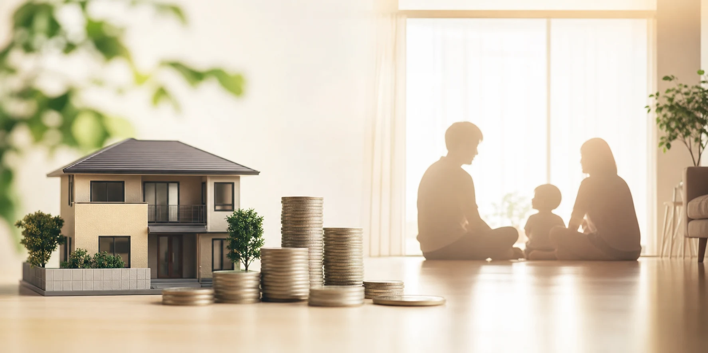
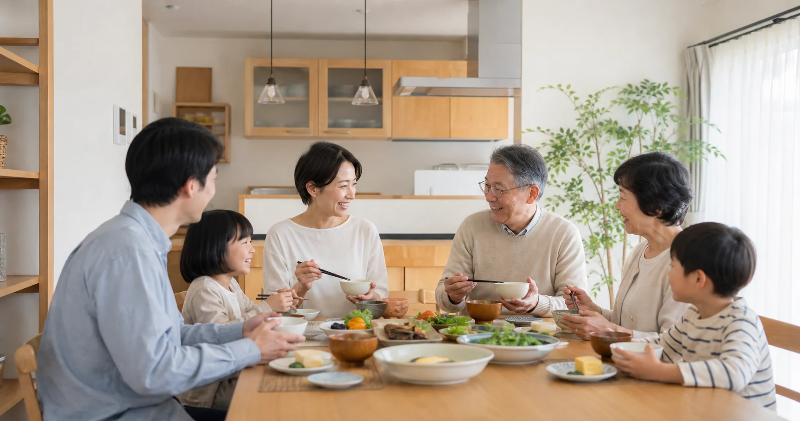

車を買うとき、かなりの人は「数年後にいくらで売れるか」を気にします。一方、戸建てを買うときに、手放すときのことまで意識する人は、意外と多くありません。
日本の住まいは、長く住み続けるだけでなく、住み替え・売却・賃貸などの「出口」を考える場面があります。私は実家の工務店で約10年、数多くの家とその"その後"を見てきました。そこで確信したのは、同じ家でも、住まい方ひとつで「財産」にも「負債」にもなるということです。
この連載の土台となる問い――「本当に価値のある家とは何か」を、世界的ベストセラー『LIFE SHIFT（ライフ・シフト）』の視点を手がかりに考えます。
1. 車の「リセール」は気にするのに、家の"出口"を考えない私たち
首都圏の中古戸建ての成約価格は、築10年で約4,871万円、築20年で約4,394万円、築30年で約3,755万円と推移します。建物部分だけで見ると、築10年ほどで新築時の約半分、20年前後で約15%程度まで下がるのが一般的です。大事なのは、同じ築年数でも価値の残り方は家によって大きく違うということ。車の下取りを気にするのと同じように、家にも"出口"があります。
2. 家の価値は、お金だけでは測れない
リンダ・グラットンとアンドリュー・スコットによる『LIFE SHIFT―100年時代の人生戦略』（東洋経済新報社、2016年）は、人生100年時代には「有形資産」だけでは幸せに生きられないと説きます。有形資産＝お金・貯蓄・不動産。無形資産＝仕事のスキルや仲間（生産性資産）、健康や家族・友人との関係（活力資産）、変化に対応する力（変身資産）。家は有形資産であると同時に、家族が健やかに暮らし絆が育つ「活力資産」を生み出す装置でもあるのです。
3. 「買った家に一生住む」とは限らない――変身資産としての住まい
私の知人は20代で購入したマンションを、30代の転職を機に売却し、その資金で住み替えました。「一生の住まい」だったはずが、人生の変化に合わせて住まいを乗り換えたことで暮らしも資産も豊かになったのです。住み続ける・住み替える・貸す・活用する――住まいの"出口"には、もっと多様な選択肢があります。
4. 住まい方ひとつで、財産にも負債にも――とくに難しい「管理」と「引き継ぎ」
家を「負債」にしてしまうのは、住まい方の中でも「管理」と「引き継ぎ」です。判断の基準を持てないまま先送りにし、負担を大きくしてしまう。そして意外にも「資産価値が高い家」ほど、相続税という重荷を引き継ぐ人にのしかけることがあります（相続や実家の畳み方は第4回で詳しく）。

5. 「実家がある」というのは、幸福なことだ
「帰れる実家がある」というのは、とても幸福なことだと思っています。これは『LIFE SHIFT』の言葉を借りれば"活力資産"そのもの。けれど向き合い方を間違えれば「負債」になる。幸福な実家を次の世代へ渡すために何ができるか、この連載で大切に考えていきます。
6. 本当に価値のある家とは何か――4つの条件
- ①資産価値が下がりにくい・上がる家（有形資産）――立地に加え、性能や手入れ次第で価値が残る時代へ。
- ②引き継いだときに子や孫に喜ばれる家（無形資産）――管理しやすく、相続の備えがある家。
- ③毎日を幸せと感じる家（活力資産）――冬に寒くない、掃除がラク、安全で安心。
- ④人が自然と集まる家（活力資産）――会話が生まれ、子や孫が「また来たい」と思う家（第3回で深掘り）。

7. 「よりよい住まいを」――ベターリビング半世紀の理念
このサイトを運営する一般財団法人ベターリビングは、1973年から、より安全で快適な住まいづくりを支える活動を続けています。「Better Living＝よりよい住まいを」という名前のように、住まいの価値を高め、暮らしの豊かさを広げる。その先にある「本当の豊かさとは何か」を、この連載で一緒に考えていきたいのです。
よくある質問
家は築20年で価値がなくなるのでは？
＋
かつての評価慣行ではそう扱われましたが、実際は築20年前後の中古戸建ても活発に取引されています。国も評価の見直しを進めており、手入れと性能次第で価値は残せる時代に向かっています。
省エネ住宅は、売るとき本当に有利ですか？
＋
有利に働きやすいです。性能が"見える化"され、住宅ローン減税などで省エネ住宅の買い手が優遇されるため、需要がつきやすくなります。ただし立地や市況が土台にある点は変わりません。
立地が良くない家は、価値を上げられませんか？
＋
立地は変えられませんが、価値は立地だけでは決まりません。健康や家族の絆を育む「暮らしの価値」は、どんな家でも高められます。
資産価値が高い家なら、安心では？
＋
一概には言えません。評価額が高い家ほど相続税が子や孫の重荷になり、兄弟間トラブルの火種になることもあります。早めの「引き継ぎの備え」が大切です（第4回）。
何から考え始めればいいですか？
＋
「わが家は、10年後・30年後の自分たちを幸せにするか」と問うことから。有形資産（価値）と無形資産（暮らし・絆）の両面で我が家を眺めてみてください。
出典・参考資料を見る
- 国土交通省「中古戸建て住宅に係る建物評価の改善に向けた指針」（2014年）
- Response「車を買うときにリセールバリューを意識する人は約44％」（2026年7月16日）
- リンダ・グラットン、アンドリュー・スコット『LIFE SHIFT』（東洋経済新報社、2016年）
- 国土交通省「長期優良住宅制度」関連資料（2024年）
- 一般財団法人ベターリビング『ベターリビング50年のあゆみ 1973-2023』

この記事を書いた人｜エイスケ
1986年生まれ、40歳。実家の建築業・不動産に10年間従事したのち、教育の世界へ。住宅と教育、両方のプロの視点から「豊かな暮らし」をテーマに忖度なく切り込みます。※本コラムは筆者個人の見解・経験に基づくものです。最終的な判断は各分野の専門家にご相談ください。